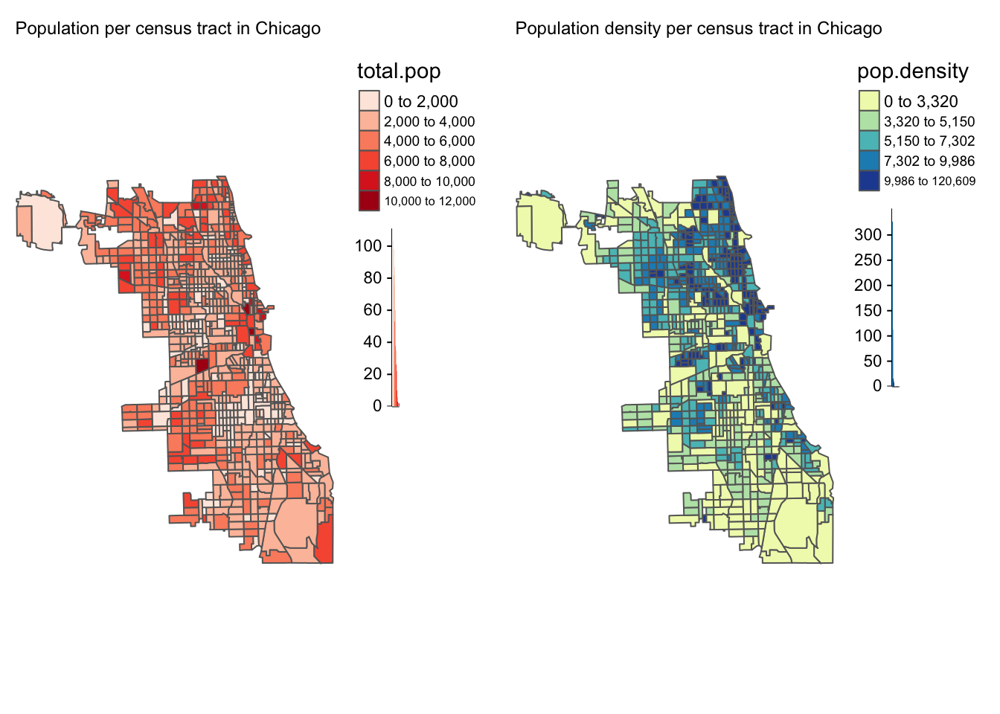
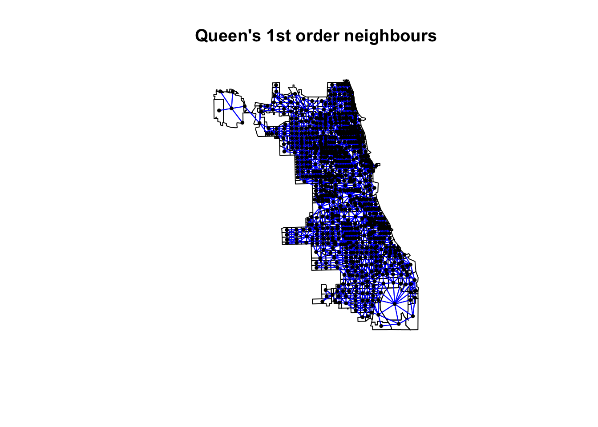
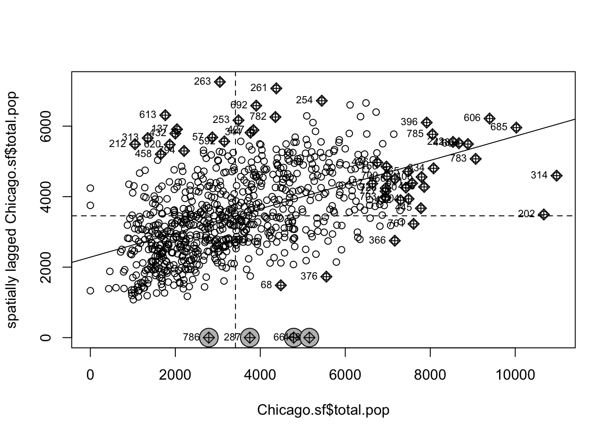

Lab 5: Moran’s I & LISA
GEOG-364 - Spatial Analysis
GEOG-364 - Spatial Analysis
Welcome to Lab 6
Aims
Today’s lab explores autocorrelation and Moran’s I, covering
scatterplots hypothesis tests, and next week, Local Moran’s I, LISA. In
addition, you will build on last week’s datacamp to use tidycensus data.
THIS IS YOUR FINAL LAB.
Part 1 starts this week, part 2 will be released at the end of thanksgiving and you will also be creating a tutorial.
A. Set-up
Seriously, please don’t skip this. It’s the biggest cause of lab issues.
A1. Create a Lab 5 project
First, you need to set up your project folder for lab 6, and install packages if you are on the cloud.
POSIT CLOUD people, click here to install packages..
Step i:
Go to https://posit.cloud/content/ and make a new project for
Lab 5
Step ii:
Run this code IN THE CONSOLE to install
the packages you need.
- This is going to take 5-10 minutes, so let it run and carry on.
# COPY/PASTE THIS IN THE CONSOLE QUADRANT,
# DON'T PUT IT IN A CODE CHUNK
install.packages("readxl")
install.packages("tidyverse")
install.packages("ggplot2")
install.packages("ggstatsplot")
install.packages("plotly")
install.packages("dplyr")
install.packages("skimr")
install.packages("rmdformats")
install.packages("remotes")
remotes::install_github(repo = "r-spatial/sf",
ref = "93a25fd8e2f5c6af7c080f92141cb2b765a04a84")
install.packages("terra")
install.packages("tidycensus")
install.packages("tigris")
install.packages("tmap")
install.packages("units")
install.packages("spdep")
install.packages("sfdep")
install.packages("rmapshaper")
# If you get a weird error it might be that the quote marks have messed up.
# Replace all of them and ask Dr G for a shortcut.Step iii:
Go to the Lab Canvas page and download
the data AND the lab report. Upload each one into your project
folder.
Forgotten how? See Lab 2 Set-Up.
R-DESKTOP people, click here to create your lab project.
A2. Add your data & lab template
Go to Canvas and download the lab template and datasets for this week’s lab. Should be one dataset and one lab template. Immediately put it in your lab 5 folder (or upload it if you’re on the cloud. Rename the lab template to something with your email ID, then open it.
A3. Change the YAML Code
The YAML code sets up your final report. Changing the theme also
helps us to not go insane when we’re reading 60 reports. Expand for what
you need to do.
Step A3 Instructions
Step i: Change the AUTHOR line to your personal
E-mail ID
Step ii: Go here and choose a theme out of downcute,
robobook, material, readthedown or html_clean: https://github.com/juba/rmdformats?tab=readme-ov-file#formats-gallery.
DO NOT CHOOSE html_docco - it doesn’t have a table of contents
Step iii:
Change the theme line on the template
YAML code to a theme of your choice. See the example YAML code below
Note, downcute chaos is different - see below
- Example YAML code if you want
robobook,material,readthedownorhtml_clean. You can also change the highlight option to change how code chunks look. - see the rmdformats website.
---
title: "Lab 5"
author: "ADD YOUR EMAIL ID"
date: "`r Sys.Date()`"
output:
rmdformats::robobook:
self_contained: true
highlight: kate
---- Example YAML code if you want
downcuteordowncute chaos. For white standard downcute, remove the downcute_theme line..
---
title: "Lab 5"
author: "ADD YOUR EMAIL ID"
date: "`r Sys.Date()`"
output:
rmdformats::downcute:
self_contained: true
downcute_theme: "chaos"
default_style: "dark"
---A4. Add the library code chunk
DO NOT SKIP THIS STEP (or any of them!). Now you
need to create the space to run your libraries. Expand for what you need
to do.
Step A4 Instructions
Step i: At the top of your lab report, add a new
code chunk and add the code below.
Step ii: Change the code chunk options at the top to
read
{r, include=FALSE, warning=FALSE, message=FALSE}
and try to run the code chunk a few times
Step iii: If it works, all ‘friendly text’ should go
away. If not, look for the little yellow bar at the top asking you to
install anything missing, or read the error and go to the install
‘app-store’ to get any packages you need.
# IF spdep causes issues, remove and run again. sfdep SHOULD be able to do everything spdep does, it's just pretty new.
rm(list=ls())
library(plotly)
library(raster)
library(readxl)
library(sf)
library(skimr)
library(spdep)
library(sfdep)
library(tidyverse)
library(tidycensus)
library(terra)
library(tmap)
library(dplyr)
library(tigris)
library(tmap)
library(units)
library(viridis)
library(ggstatsplot)
library(rmapshaper)
options(tigris_use_cache = TRUE)STOP AND CHECK
STOP! Your screen should look similar to the screenshot below (although your lab 5 folder would be inside GEOG364).If not, go back and redo the set-up!

B. Regression (week 1)
1. Introduction to Spatial Data in Houston
In your report, I have provided a brief description of a dataset on
social demographics for the Houston area. We are going to conduct a
regression analysis on the dataset. I will work on Chicago, and you will
work on Houston (e.g. you simply need to tweak my example code)
[Task B1] Using my example code below (I’m working on Chicago)
Load a preprocessed GeoPackage (
Texas_Census_Data.gpkg) containing ACS data for the region around Houston.Subset the dataset to the Houston city boundaries
Identify empty or zero-population polygons.
Median income.
Percentage of people earning > $75K.
Housing density.
Total population.
Owner-occupied housing units.
Broadband access.
# Choose all the places in Illinois and find the one called chicago
pl <- places(state = "IL", cb = TRUE, year=2017)## | | | 0% | |= | 2% | |== | 3% | |=== | 5% | |==== | 6% | |===== | 7% | |====== | 9% | |======== | 11% | |========= | 13% | |========== | 14% | |=========== | 16% | |============ | 17% | |============= | 19% | |============== | 20% | |=============== | 22% | |================ | 23% | |================= | 25% | |================== | 26% | |=================== | 28% | |==================== | 29% | |====================== | 31% | |======================= | 33% | |======================== | 34% | |========================= | 36% | |========================== | 37% | |=========================== | 39% | |============================ | 40% | |============================= | 42% | |============================== | 43% | |=============================== | 45% | |================================ | 46% | |================================== | 48% | |=================================== | 49% | |==================================== | 51% | |===================================== | 52% | |====================================== | 54% | |======================================= | 55% | |======================================== | 57% | |========================================= | 58% | |========================================== | 60% | |=========================================== | 61% | |============================================ | 63% | |============================================= | 64% | |============================================== | 66% | |=============================================== | 67% | |================================================ | 69% | |================================================= | 70% | |================================================== | 72% | |=================================================== | 73% | |==================================================== | 75% | |===================================================== | 76% | |====================================================== | 78% | |======================================================== | 79% | |========================================================= | 81% | |========================================================== | 82% | |=========================================================== | 84% | |============================================================ | 85% | |============================================================= | 87% | |============================================================== | 88% | |=============================================================== | 90% | |================================================================ | 91% | |================================================================= | 93% | |================================================================== | 94% | |=================================================================== | 96% | |==================================================================== | 97% | |===================================================================== | 99% | |======================================================================| 100%# and find the ones called Chicago
Chicago.boundary <- filter(pl, NAME == "Chicago")
# Crop to the city limits
Chicago.sf <- ms_clip(target = IL.ACS.sf,
clip = Chicago.boundary,
remove_slivers = TRUE)#
# Calculate the percentage of people/homes
Chicago.sf <- mutate(Chicago.sf, percent.income.gt75 = income.gt75 / total.pop)
Chicago.sf <- mutate(Chicago.sf, percent.broadband = broadband / total.house)
Chicago.sf <- mutate(Chicago.sf, percent.ownerocc = owneroccupied / total.house)
#Finding the area of each county
area.m2 <- as.numeric(st_area(Chicago.sf))
# This is in metres^2. Convert to Km sq and make a new column
Chicago.sf$area.km2 <- area.m2/1000000
# calculate the population and housing density
Chicago.sf <- mutate(Chicago.sf, pop.density = total.pop/area.km2)
Chicago.sf <- mutate(Chicago.sf, house.density = total.house/area.km2)# create map 1
map1 <- tm_shape(Chicago.sf, unit = "mi") +
tm_polygons(col="total.pop",
style="pretty",
legend.hist = TRUE,
palette="Reds") +
tm_layout(main.title = "Population per census tract in Chicago",
main.title.size = 0.75, frame = FALSE) +
tm_layout(legend.outside = TRUE)
map2 <- tm_shape(Chicago.sf, unit = "mi") +
tm_polygons(col="pop.density",
style="quantile",
legend.hist = TRUE,
palette="YlGnBu") +
tm_layout(main.title = "Population density per census tract in Chicago",
main.title.size = 0.75, frame = FALSE) +
tm_layout(legend.outside = TRUE)
# Fix any mapping errors
tmap_options(check.and.fix = TRUE)
# print the maps
tmap_arrange(map1,map2)
which_tracts_empty <- st_is_empty(Chicago.sf)
Chicago.sf <- dplyr::filter(Chicago.sf,which_tracts_empty==FALSE)QueenNeighbours <- poly2nb(Chicago.sf, queen=TRUE)
Chicago.coords <- st_coordinates(st_centroid(Chicago.sf))
plot(st_geometry(Chicago.sf),main="Queen's 1st order neighbours")
plot(QueenNeighbours, Chicago.coords,
col = "blue", pch=16,cex=.6,
add=TRUE)
QueenWeights <- nb2listw(QueenNeighbours,
style="W", zero.policy=TRUE)## and calculate the Moran's plot
moran.plot(Chicago.sf$total.pop,
listw= QueenWeights,
zero.policy = T)
Examine variables, including:
Median income.
Percentage of people earning > $75K.
Housing density.
Total population.
Owner-occupied housing units.
Broadband access.
2. Cleaning and Preparing Data
Purpose: Ensure students can identify and remove problematic data.
Tasks:
Identify empty or zero-population polygons.
Remove such polygons using a provided script.
Visualize the cleaned data using
tmap.
5. Regression Analysis
Purpose: Explore relationships between variables in a regression framework.
Tasks:
Build a simple linear regression model:
Response: Percentage earning > $75K.
Predictor: Population density.
Assess model fit and spatial independence of residuals.
6. Calculating Spatial Weights
Purpose: Teach spatial adjacency and weights concepts.
Tasks:
Create a Queen-based spatial weights matrix using
poly2nb()andnb2listw().Plot the adjacency graph.
7. Spatial Dependence in Residuals
Purpose: Test residuals for spatial autocorrelation.
Tasks:
Perform Moran’s I on residuals.
Map residuals and highlight clusters.